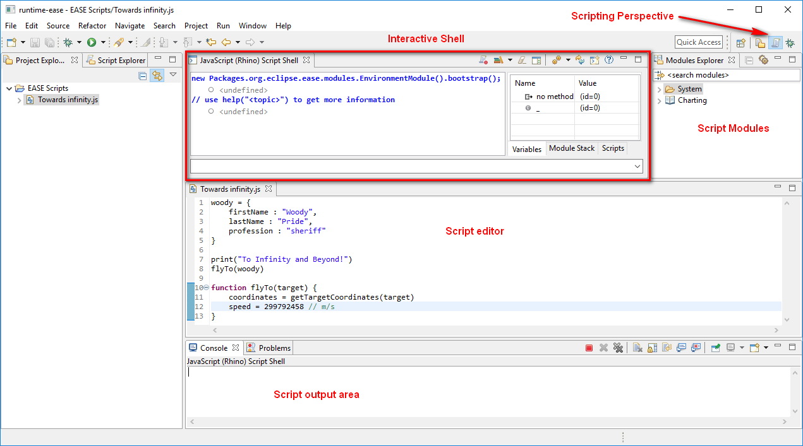

The scripting perspective arranges the workspace to display the most required features for script development.
The Shell is the core component, allowing to enter commands for immediate execution. Its history displays commands along with their return values. Any output is redirected to a console view. On the righthand side of the view additional information for the current shell may be inspected, like assigned variables or loaded modules.
Multiple shells may be spawned, each of them running in a sandbox, isolated from other shells. As a consequence, scripting engines do not share the same scope.
EASE provides some libraries that help to access typical java feature from scripting. The Modules Explorer lists available libraries along with their functions. For detailed help hover over an element or use the context menu. To load a module, use drag it into the Script Shell.
Script locations can be registered via preferences and allow to display common scripts more prominently in the Script Explorer. Registered scripts also allow to augment the UI or add behavior on special events.
Editors are not provided directly by EASE. Instead they ship as part of the development tools for a specific script language. When installing EASE JavaScript support, we automatically install JSDT which will provide editing support for JavaScript files. For Python the PyDev project provides editing support (to be installed separately).